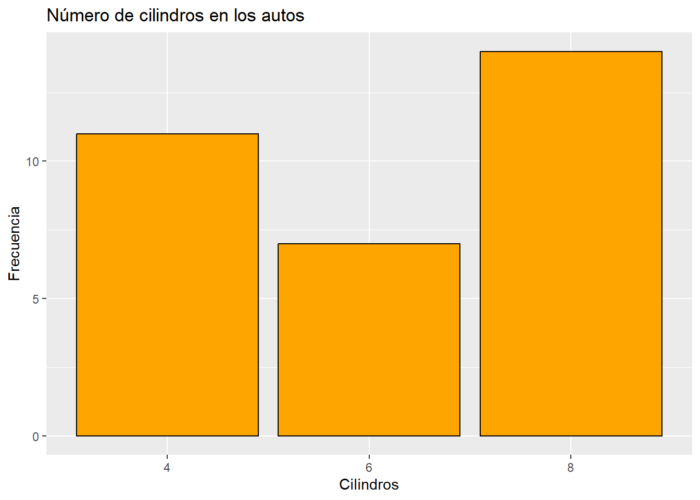
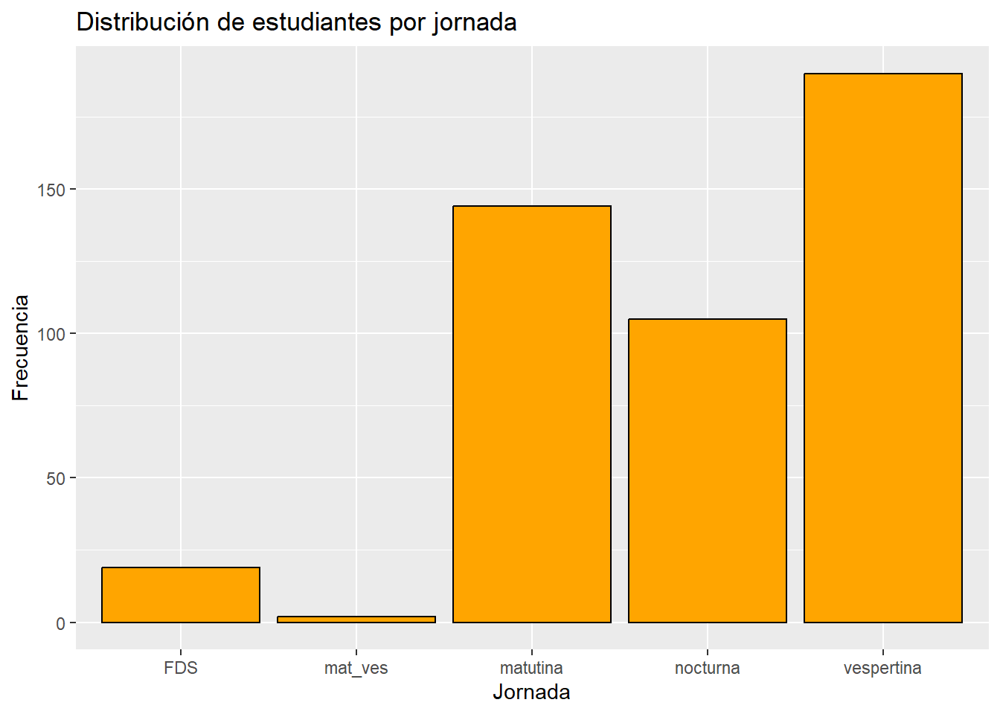
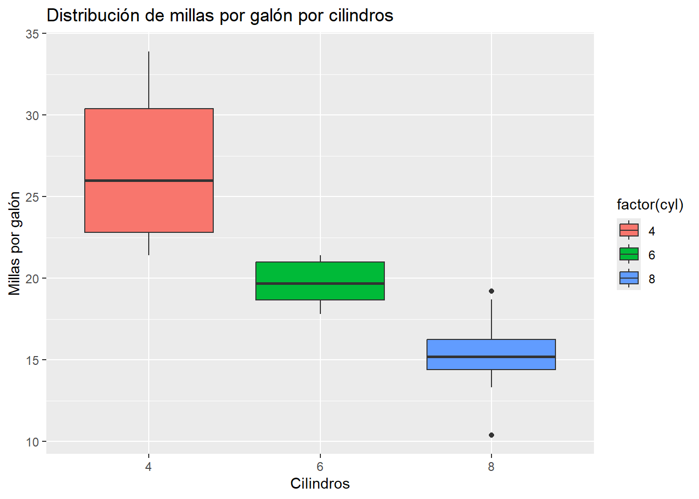
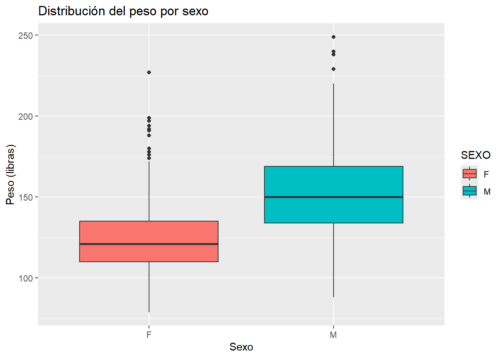
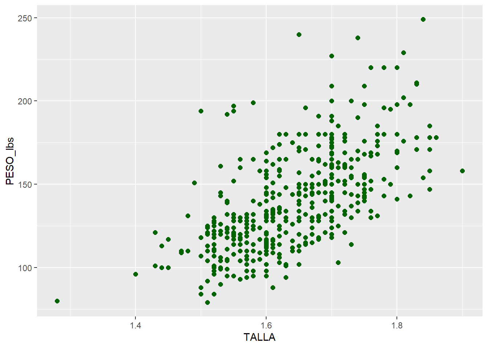
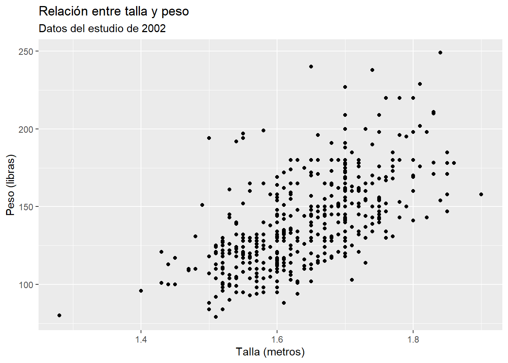
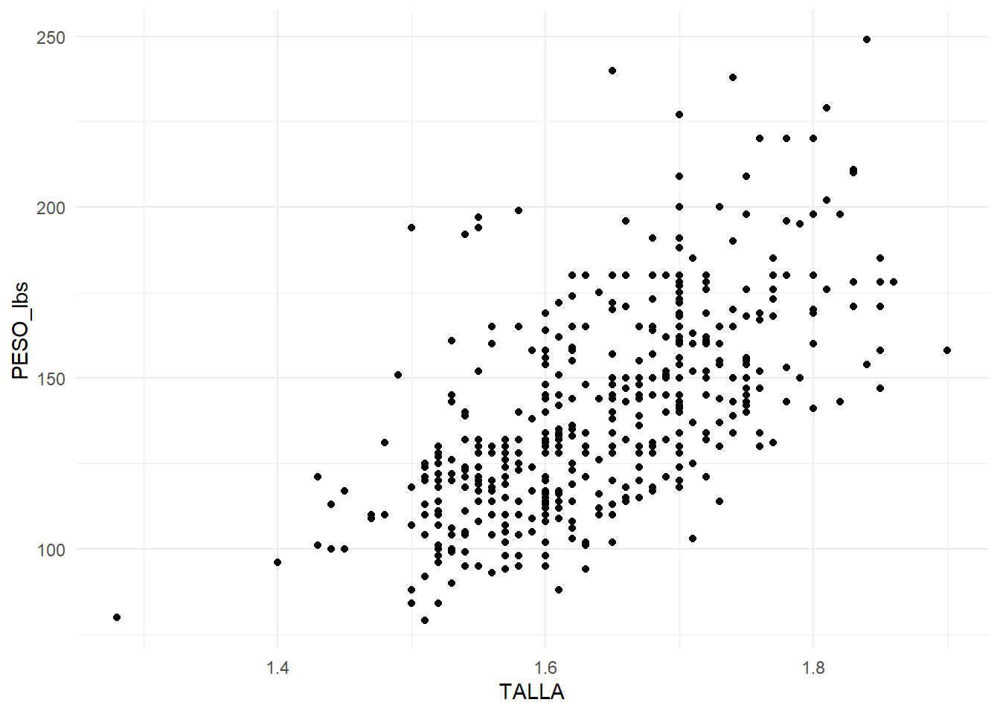
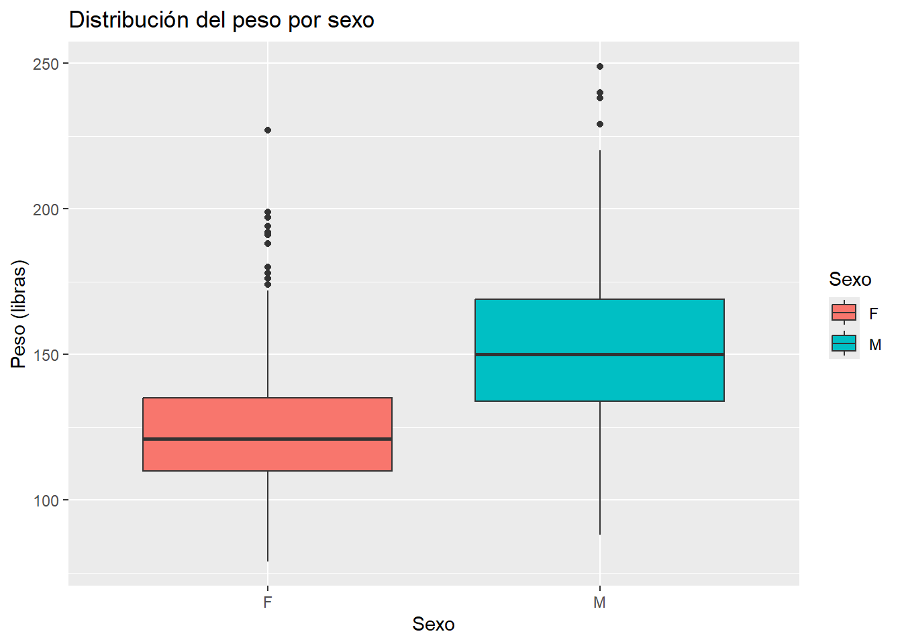
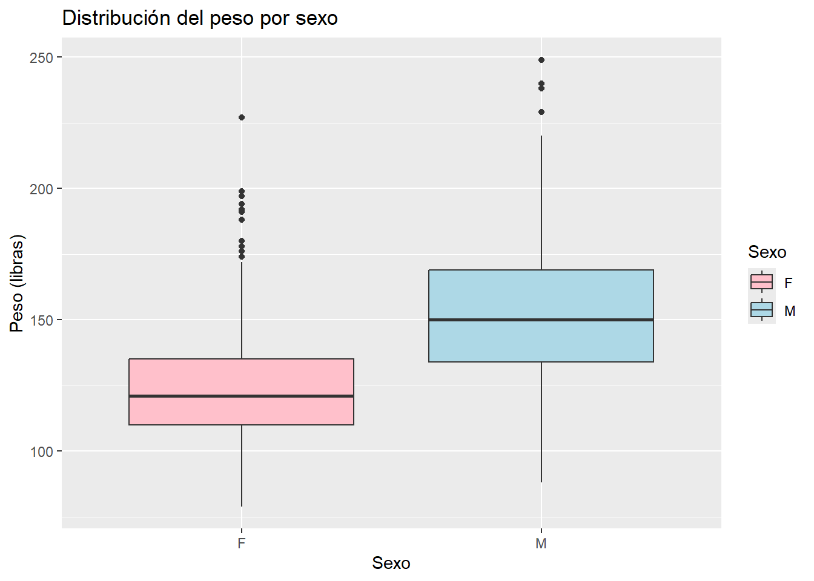
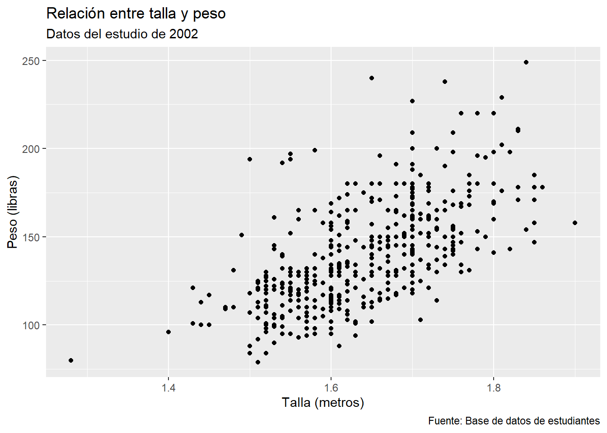

ggplot(data = DATOS, aes(x = VARIABLE_X, y = VARIABLE_Y)) +
GEOM_FUNCION() +
labs(title = "Título del gráfico",
x = "Etiqueta eje X",
y = "Etiqueta eje Y")9 Visualización de datos
La visualización de datos es una herramienta fundamental en el análisis estadístico, ya que permite explorar patrones, identificar relaciones y comunicar resultados de manera efectiva. En R, el paquete ggplot2 es ampliamente utilizado debido a su flexibilidad y capacidad para generar gráficos de alta calidad. Este capítulo detalla los conceptos básicos de ggplot2, la creación de gráficos comunes y las opciones de personalización disponibles.
9.1 Contexto de la base de datos utilizada
En 2002, se llevó a cabo un estudio en la Universidad de San Carlos de Guatemala, en el que se recopilaron datos de 460 estudiantes de diversas facultades. Esta base de datos incluye una amplia variedad de variables, como facultad, edad, sexo, estado civil, si trabajan o no, jornada de estudio, año de ingreso, peso en libras, talla, y hábitos como fumar o consumo de alcohol. Este conjunto de datos, disponible para su descarga en formato CSV a través del siguiente enlace, será utilizado a lo largo de esta sección para aplicar las herramientas y conceptos desarrollados.
Nota: Para realizar los ejemplos, es necesario descargar el archivo y guardarlo en la carpeta correspondiente al proyecto en curso.
9.2 Introducción al paquete ggplot2
El paquete ggplot2 forma parte del ecosistema tidyverse y está diseñado para crear gráficos mediante una lógica de capas. Cada capa representa un componente del gráfico, como los datos, las geometrías (tipos de gráficos), las etiquetas y los temas. Este enfoque modular permite construir gráficos complejos de manera progresiva y reproducible.
9.2.1 Estructura básica de un gráfico en ggplot2
La estructura general de un gráfico en ggplot2 sigue la siguiente sintaxis:
data: Define el conjunto de datos que se utilizará.aes(): Especifica el mapeo estético, es decir, cómo las variables se asignan a los ejes, colores, tamaños, etc.GEOM_FUNCION(): Indica el tipo de gráfico que se desea crear (e.g., puntos, barras, líneas).labs(): Añade etiquetas y títulos al gráfico.
Ventajas de ggplot2:
Permite personalizar gráficos de manera detallada.
Produce gráficos de calidad profesional.
Es compatible con otros paquetes del tidyverse, facilitando la integración en flujos de trabajo.
9.3 Creación de gráficos básicos
A continuación, se presentan ejemplos de gráficos comunes que se pueden crear con ggplot2, junto con su sintaxis y explicación.
9.3.1 Importación de la base de datos
Antes de comenzar, es necesario importar la base de datos en formato CSV y cargar los paquetes que se van a utilizar. Para ello, se utiliza el siguiente código:
# Ejemplo práctico: Uso de paquetes para visualización
# NOTA: Antes de trabajar, es necesario crear y guardar un nuevo script.
# Instalación y carga de paquetes esenciales
# Paquete que incluye ggplot2, dplyr, tidyr
if (!require("tidyverse")) install.packages("tidyverse")
# Paquete para establecer el directorio de trabajo automáticamente
if (!require("rstudioapi")) install.packages("rstudioapi")
# Importar la base de datos
datos <- read_csv("datos_estudiantes.csv")
# Ver las primeras filas del conjunto de datos
head(datos)# A tibble: 6 × 11
FACULTAD EDAD SEXO EST_CIVIL TRABAJA JORNADA AÑO_ING PESO_lbs TALLA Fuma
<chr> <dbl> <chr> <chr> <dbl> <chr> <dbl> <dbl> <dbl> <chr>
1 Admon. 21 M soltero 2 vespertina 1998 150 1.7 2
2 Admon. 21 M soltero 1 vespertina 1998 150 1.72 2
3 Admon. 31 F casado 1 nocturna 1991 197 1.55 1
4 Admon. 38 M unido 1 nocturna 1992 120 1.7 2
5 Admon. 24 M casado 1 nocturna 1995 175 1.7 2
6 Admon. 34 M soltero 2 nocturna 1986 156 1.7 2
# ℹ 1 more variable: Alcohol <dbl>9.3.2 Histogramas
Los histogramas son útiles para explorar la distribución de una variable numérica.
9.3.2.1 Ejemplo
ggplot(data = datos, aes(x = PESO_lbs)) +
geom_histogram(binwidth = 5, fill = "skyblue", color = "black") +
labs(title = "Distribución del peso de los estudiantes",
x = "Peso (libras)",
y = "Frecuencia")
geom_histogram(): Crea el histograma.binwidth: Define el ancho de las barras.fillycolor: Personalizan el color de las barras y sus bordes.
9.3.3 Gráficos de barras
Los gráficos de barras se utilizan para representar datos categóricos.
9.3.3.1 Ejemplo
ggplot(data = datos, aes(x = JORNADA)) +
geom_bar(fill = "orange", color = "black") +
labs(title = "Distribución de estudiantes por jornada",
x = "Jornada",
y = "Frecuencia")
factor(cyl): Convierte la variable numéricacylen una variable categórica.geom_bar(): Genera el gráfico de barras.
9.3.4 Gráficos de dispersión (scatterplots)
Los gráficos de dispersión permiten explorar relaciones entre dos variables numéricas.
9.3.4.1 Ejemplo
ggplot(data = datos, aes(x = TALLA, y = PESO_lbs)) +
geom_point(color = "red", size = 2) +
labs(title = "Relación entre talla y peso",
x = "Talla (metros)",
y = "Peso (libras)")
geom_point(): Dibuja los puntos en el gráfico.colorysize: Personalizan el color y el tamaño de los puntos.
9.3.5 Boxplots
Los boxplots son útiles para comparar la distribución de una variable numérica entre diferentes grupos.
9.3.5.1 Ejemplo
ggplot(data = datos, aes(x = SEXO, y = PESO_lbs, fill = SEXO)) +
geom_boxplot() +
labs(title = "Distribución del peso por sexo",
x = "Sexo",
y = "Peso (libras)")
9.3.6 Gráfico de líneas
Los gráficos de líneas son especialmente útiles para visualizar tendencias temporales o secuencias de datos. En este ejemplo, se visualizará la distribución de estudiantes por año de ingreso.
9.3.6.1 Ejemplo
# Crear un gráfico de líneas de estudiantes por año de ingreso
ggplot(data = datos, aes(x = AÑO_ING)) +
geom_line(stat = "count", color = "darkblue", linewidth = 1.2) +
geom_point(stat = "count", color = "darkred", size = 3) +
labs(title = "Estudiantes encuestados por año de ingres",
subtitle = "Universidad de San Carlos de Guatemala (2002)",
x = "Año de ingreso",
y = "Número de estudiantes") +
theme_minimal()
9.4 Personalización de gráficos
La personalización de gráficos en ggplot2 permite adaptarlos a diferentes necesidades y mejorar su presentación. A continuación, se describen las opciones más comunes.
9.4.1 Personalización de colores
Es posible cambiar los colores de los elementos del gráfico, como puntos, barras o líneas.
9.4.1.1 Ejemplo: personalización de colores en un scatterplot
ggplot(data = datos, aes(x = TALLA, y = PESO_lbs)) +
geom_point(color = "darkgreen", size = 2)
9.4.2 Etiquetas y títulos
Se pueden añadir y personalizar títulos, subtítulos y etiquetas de los ejes.
9.4.2.1 Ejemplo: añadir subtítulos y etiquetas personalizadas
ggplot(data = datos, aes(x = TALLA, y = PESO_lbs)) +
geom_point() +
labs(title = "Relación entre talla y peso",
subtitle = "Datos del estudio de 2002",
x = "Talla (metros)",
y = "Peso (libras)")
9.4.3 Temas
Los temas permiten cambiar el estilo general del gráfico, como los colores de fondo, las líneas de los ejes y las fuentes.
9.4.3.1 Ejemplo: aplicar un tema minimalista
ggplot(data = datos, aes(x = TALLA, y = PESO_lbs)) +
geom_point() +
theme_minimal()
9.4.4 Facetas
Las facetas dividen un gráfico en subgráficos según una variable categórica.
9.4.4.1 Ejemplo: relación entre talla y peso por facultad
ggplot(data = datos, aes(x = TALLA, y = PESO_lbs)) +
geom_point() +
facet_wrap(~ FACULTAD) +
labs(title = "Relación entre talla y peso por facultad")
9.4.5 Escalas
Las escalas permiten modificar los ejes y las leyendas del gráfico.
9.4.5.1 Ejemplo
ggplot(data = datos, aes(x = TALLA, y = PESO_lbs, color = factor(JORNADA))) +
geom_point() +
scale_color_manual(values = c("red", "blue", "purple","orange","green"))+
labs(color = "JORNADA")
9.4.6 Ejemplo avanzado de personalización
La gran cantidad de funciones para personalizar y la logica de capas que utiliza ggplot2 que se explicaron anteriormente permite crear resultados con un grado de complejidad mucho mayor como se ve a continuacion:
# Crear un gráfico de barras con personalización profesional
ggplot(data = datos, aes(x = FACULTAD)) +
geom_bar(fill = "steelblue", color = "black", alpha = 0.8) +
labs(
title = "Distribución de estudiantes por facultad",
subtitle = "Datos del estudio de 2002, Universidad de San Carlos de Guatemala",
x = "Facultad",
y = "Cantidad de estudiantes",
caption = "Fuente: Estudio realizado en 2002"
) +
theme_minimal() +
theme(
plot.title = element_text(size = 16, face = "bold", hjust = 0.5),
plot.subtitle = element_text(size = 12, hjust = 0.5, color = "gray50"),
axis.title = element_text(size = 12, face = "bold"),
axis.text.x = element_text(angle = 45, hjust = 1, size = 10),
panel.grid.major.x = element_blank(),
panel.grid.minor = element_blank(),
plot.caption = element_text(hjust = 0, size = 8, color = "gray50")
)
9.4.6.1 Explicación del código
Datos y mapeo estético:
aes(x = FACULTAD): Se utiliza la variable FACULTAD directamente desde la base de datos para el eje X.
Gráfico de barras:
geom_bar(): Genera automáticamente las barras basándose en la frecuencia de cada categoría.
fill y color: Personalizan el color de las barras y sus bordes.
alpha: Ajusta la transparencia de las barras.
Etiquetas y títulos:
labs(): Añade un título principal, subtítulo, etiquetas para los ejes y una nota al pie con la fuente de los datos.
Tema profesional:
theme_minimal(): Aplica un diseño limpio y moderno.
theme(): Personaliza elementos como el título, subtítulo, etiquetas de los ejes y elimina líneas de cuadrícula innecesarias.
axis.text.x: Rota las etiquetas del eje X para mejorar la legibilidad.